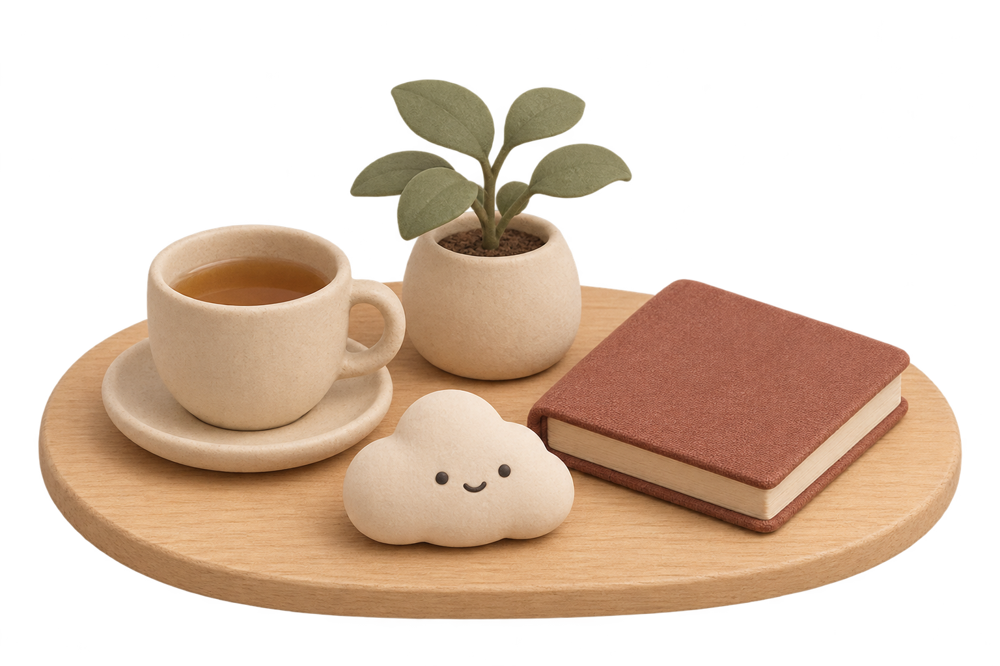

GET IT OUT OF YOUR HEAD
Your tasks0
LESS DECIDING, MORE DOING
2h availableA plan that fits.
Add your tasks above. We’ll suggest a realistic shortlist, starting with your highest priorities.
A place for your plans, little rituals, and things that make you smile. Settle in. There’s no rush.
Small things, thoughtfully kept.
A few good intentions. One small step at a time.
Add your tasks above. We’ll suggest a realistic shortlist, starting with your highest priorities.